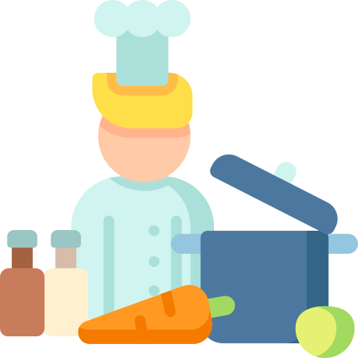
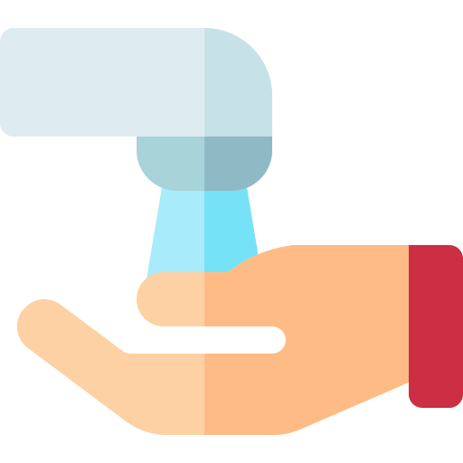
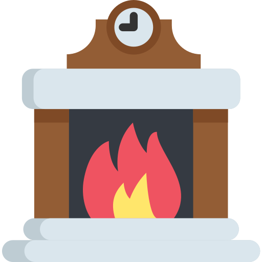
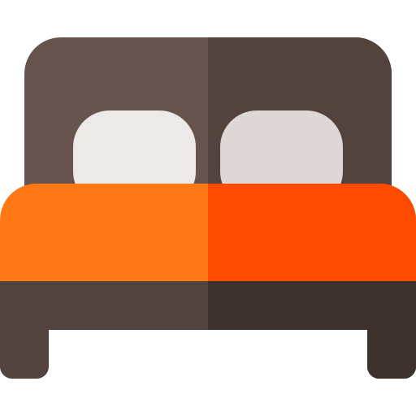

<ion-header>
  <ion-navbar>
    <ion-title>Senior Status</ion-title>
  </ion-navbar>
</ion-header> 

<ion-content padding>
  <h2 style="text-align: center">Last seen</h2>
  <div *ngIf="lastSeenRoom.room === 'kitchen'">
      
  </div>
  <div *ngIf="lastSeenRoom.room === 'toilet'">
      
  </div>
  <div *ngIf="lastSeenRoom.room === 'living'">
      
  </div>
  <div *ngIf="lastSeenRoom.room === 'bedroom'">
      
  </div>
  
  <ion-list>
    <ion-item>
        <span>In the {{lastSeenRoom.room}}</span>
    </ion-item>
    <ion-item>
        <span>At around {{lastSeenRoom.dateTime}}</span>
    </ion-item>
  </ion-list>
</ion-content>
